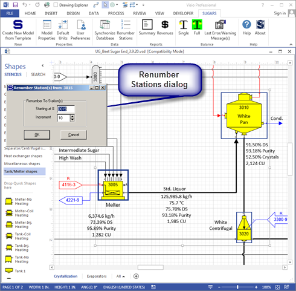

Models are built either by modifying one of the example models, or by using one of the Sugars blank drawing templates provided with the program. Modifying one of the example models can make the model building process much quicker if an example is available that is similar to the process being modeled. The blank drawing templates are used if an example is not available. Two templates are provided with Sugars: (1) "SugarsSI.vst" for building models in the SI (meters, kg, °C) system and (2) "SugarsUS.vst" for building models in the US (foot, lb, °C, or °F) system. The Sugars blank drawing templates are located in the "C:\Program Files\Sugars\Data" directory. The ".vst" files are Visio template files that set the drawing parameters for making a flow diagram drawing of a model. Also, the templates load all of the stencils that contain shapes for making a flow diagram of a Sugars model.
Example models provided with Sugars are installed in the "C:\Program Files\Sugars\Examples" directory. In many cases, starting a new model with one of these examples will significantly speedup the building of the model. If an example model is used to create another model, be sure to save the new model in a directory other than the Examples directory so that the models in the Examples stay undisturbed. New models can be saved in the "C:\Users\(Name of User)\Models" directory; however, any other directory also can be used.
Station numbering is important to the efficiency of the balance calculations. Sugars does its iterations by starting the calculations with all flows into the lowest numbered station in the model. After it does the calculations for the lowest numbered station, it goes to the next lowest numbered station and does the calculations for that station. It continues with the calculations for each station in numerical order until it reaches the last station (highest station no. in the model). Hence, for maximum calculation efficiency, it is best to have the stations numbered in a manner that results in a smooth flow of material from one station to the next. For example, suppose juice flows into heat exchanger station no. 100 and the juice flows out of the heat exchanger to another heat exchanger station no. 560 and the juice out of the 2nd heat exchanger flows to an evaporator body station no. 110. Now, when Sugars does its calculations, the juice flow to station no. 110 will not be determine until after it does the calculations for station no. 560. If vapor flows are used to heat the heat exchangers, the correct vapor flow to station no. 110 will not be determined until the next iteration cycle. Unorganized station numbering causes instability in the balance calculations and makes it difficult for Sugars to achieve a balance. The following is a summary of things to consider when constructing a model.
Balance and Stability Considerations
Section the factory into different parts and assign station numbers to those stations in the same section. Start with cossettes or cane for factories and raw sugar for refineries and move up through the factory or refinery. Leave ranges of numbers open so that stations can be added later if all of the sections of the factory or refinery are not included when first building the model. Try to keep a range of numbers on the same page so stations can be easily located later when working on the model.
Generally, separate each station number by at least 10 so other stations can be added at a later time if necessary without having to do a lot of renumbering. An exception to this is for a group of stations that represent one station in the factory. Usually, for groups, station numbers are separated by one (1) because a group of stations will not have other stations added in between at a later time. The numbering separation for stations and groups can be set from the Sugars ribbon menu by selecting the User Preferences icon.
Follow the juice flow through the model to order the station numbers. When assigning station numbers, think in terms of how Sugars does the balance. That is, Sugars starts at the lowest station number to solve the change in flow(s) going through the station and then it goes in numerical order to the next station to solve its flow(s). When it finishes with the highest number, it checks to see if the model is in balance, and if it is not, it then redoes the balance. When stations are out of order, the balance is more difficult and less stable because the natural progression of flows from one station to the next is not followed. This causes excessive iterations to reach a balance. The only exception to following the juice flow through a factory is the evaporator station because for larger models it actually may be more efficient to have the evaporator station at the end so that all of the vapor loads are determined first before Sugars tries to balance the multiple-effect. Also, this allows the model to be separated easily when it is being built because the multiple-effect evaporator can be isolated until the model is working correctly. After the model is correct, the multiple-effect can be connected to the rest of the model using cross-page connectors.
Pay attention to required flows in a model when number stations. Required flows pass the quantity backwards against the flow so that sometimes it is more efficient to number stations in the direction of the required flow. However, pressure, temperature, components, solubility equation coefficients and color are passed forward, so it may be better to number stations in the direction of the flow if these change more frequently (due to other stations, or during the iterations) than the quantity of flow.
Use pressure feedback flows (see Sugars online help or the User's guide) for all flash tanks that are flashing vapor to another vapor line, such as flash tanks in evaporation.
Get each section working and verify it with actual factory data before adding another section. For example, build diffusion or milling and make sure the results from the model match the data from the factory before adding clarification or purification.
Appearance Considerations
Use layers for different types of flow streams so that text on the flow stream will also be in the same color. Also, layers allow selective display and printout to help clarify the flow diagram and using different colors for flow types (steam, condensate, product, etc) makes it much easier and faster to understand the model.
Do not use dashed lines because they change the text box for required and pressure feedback indicators on cross-page connectors. Dashed lines can make the flow diagram more difficult to follow.
Try not to put too many stations and flow streams on one page. It can be hard to follow a flow diagram when a page is overloaded with stations and flow streams. Use on-page connectors for connections on the same page if the flow streamlines get too crowded.
Use cross-page connectors for connections that go between pages and on-page connectors for connections on the same page. This makes it easier to locate the corresponding mate to an on-page or cross-page connector when viewing the model at a later time.
Order the pages in the same manner as the station numbering; that is, the first page should contain the stations with the lowest numbers and the last page should hold the stations with the highest numbers. Name the pages by right clicking on the page tab and selecting rename. The pages can be reordered by right clicking the page tab and selecting "Reorder Pages...".
Do not resize shapes. The Sugars shapes on the stencils are designed to fit to the grid so that connections are aligned to follow grid lines. This helps to avoid the small squiggles that can occur on connecting lines. The alignment is lost if the shapes are resized.
Use care when selecting shapes on the drawing, or the station number text box will be moved instead of the shape. The cursor will change to have a four arrow cross with a white arrow when a shape is selected. If the cursor is only a four arrow cross, then the handle for the station number text is selected and it will be moved instead of the shape. So, be sure the cursor is selecting the shape before clicking and holding the left mouse button to move the shape.
Most models of a complete factory, or refinery, are multiple page models. A new page can be created at any time (see Visio help for details) and cross-page connectors (see Cross-Page and On-Page Connectors) are used to connect stations on one page with stations on another page. On-page connectors are usually used to connect stations on the same page. Partitioning a factory into sections with a range of numbers for each section makes it easier to navigate a model and to locate a station that is referenced in a cross-page connector when a model is composed of several pages. One technique is to use a range of numbers for each page. For example, page 1 might have station numbers in the range of 1000 to 1999, and page 2 would have numbers that range from 2000 to 2999, etc. Using the same range of numbers for common sections of a factory makes it easier to identify stations and different parts of a factory. For example, the multiple evaporator section of a factory might always have numbers that are in the 6000's; hence, if multiple effect evaporation is on page 3, a five effect multiple might be numbered 6100, 6200, 6300, 6400 and 6500 for 1st, 2nd, 3rd, 4th, and 5th effects. Stations between the effects such as flash tanks, receivers and distributors would have numbers based on these. That is, the 1st effect vapor receiver would have station number 6110. This makes it much easier to identify vapor flows in the model; for example, if vapor to a heat exchanger comes from station no. 6320, it is easy to know that it is 3rd vapor. The example models section (see Examples) show numbering techniques that result in stable models with efficient iterations and easy identification of flow streams.
Sugars has a renumbering feature if the station numbers need to be changed. The window below shows three stations highlighted with Renumber Stations selected from the Sugars ribbon menu.

The Renumber Stations dialog has a starting number and an increment for the numerical separation between stations. The dialog shows the default values that are set in User Preferences (see Program Overview > User Interface).
A new model can be started at any time by clicking on the Create New Model from Template icon on the Sugars ribbon menu. This will cause the currently displayed model to be closed before the new model can be active.
Only one model can be open at a time within the same instance of Visio; however, multiple instances of Visio can each have a different model and the different models can be viewed and balanced by making their window active. Shapes and connections can be copied between different models in different instances of Visio; however, station data and flow legends will be lost in the destination model and any cross-page, or on-page connectors in the source model will lose their connections when they are pasted into the destination model. Data between models can be entered using the source model as the reference by opening the properties screen for either the station or the flow and then opening the properties screen in the destination model and duplicating the data.
Stations may be copied within the same model and the data in the stations will be copied to the new copies of the copied stations. Just highlight the stations to be copied and either hold down the control key at the same time as the left mouse button and drag the stations to another area of the drawing, or copy the highlighted stations to the clipboard and paste them back onto the drawing. When the copy is executed, Sugars will ask for new station numbers for each of the stations being copied.
Sometimes a model will lose its synchronization between the drawing and the database. If this happens, the Synchronize Database icon on the Sugars ribbon menu can be used to fix the inconsistencies. The Synchronize Database option will check every flow stream in the model to see that there is a corresponding entry in the database. Sugars will fix any missing entries. The drawing is the reference; that is, what is on the drawing controls the entries in the database.
Be sure to save the model periodically as data is being entered so that all entered data is not lost if a power failure or other problem occurs.